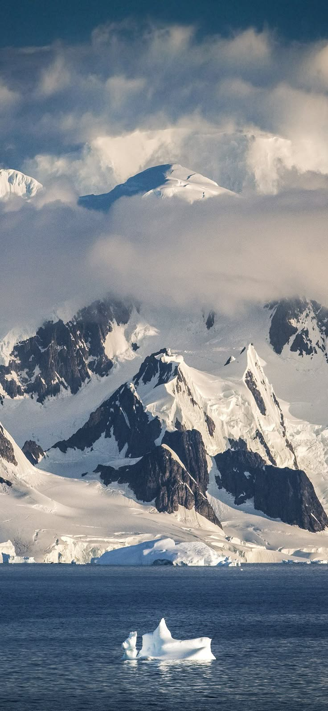

Get to know the coldest places on Planet Earth
Imagine being outside for a few seconds and having your eyelashes freeze in seconds. In the vast surface of the earth there are places where temperatures can reach reach levels so low that it is almost impossible to live. In these times of climate change, it is good to remember that there are very cold places on the planet. Discover some of the coldest places in the world.
The Fuji Dome. Antarctica Location: Recorded temperature -93.2°C. Located in the heart of Antarctica, between Mounts Fuji and Argus, Fuji Dome is one of the coldest places in the world. In mid-2010, a temperature of -93.2 degrees Celsius below zero was recorded, this was verified by scientific methods. The cold in this region, which is located along a mountain ridge, could freeze a human's eyes, nose and lungs. in just a matter of minutes.
The Russian Vostok Base. Antarctica Location: Recorded Temperature -89.2°C The second coldest temperature recorded in history is found at the Russian Vostok base, also in Antarctica. In 1983, a temperature of -89.2°C was recorded. This scientific research station, owned by Russia, is located at the South Magnetic Pole at an altitude of 3500 meters above sea level, near Lake Vostok, one of the largest in the world and covered with 4 kilometer-long glaciers.
Snag, Yukon. Location Canada: Recorded temperature -64°C The population of Snag, Canada consists of only 10 native inhabitants and a group of scientists and meteorologists. The town is generally considered the coldest place in North America, with a temperature of -64°C, setting a record in 1947. as the lowest temperature recorded in North America.
